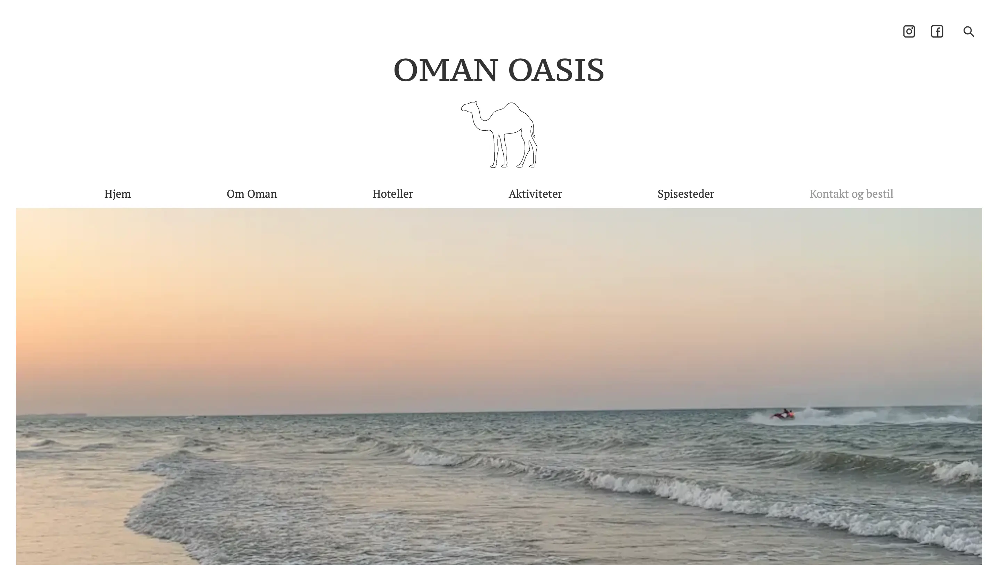
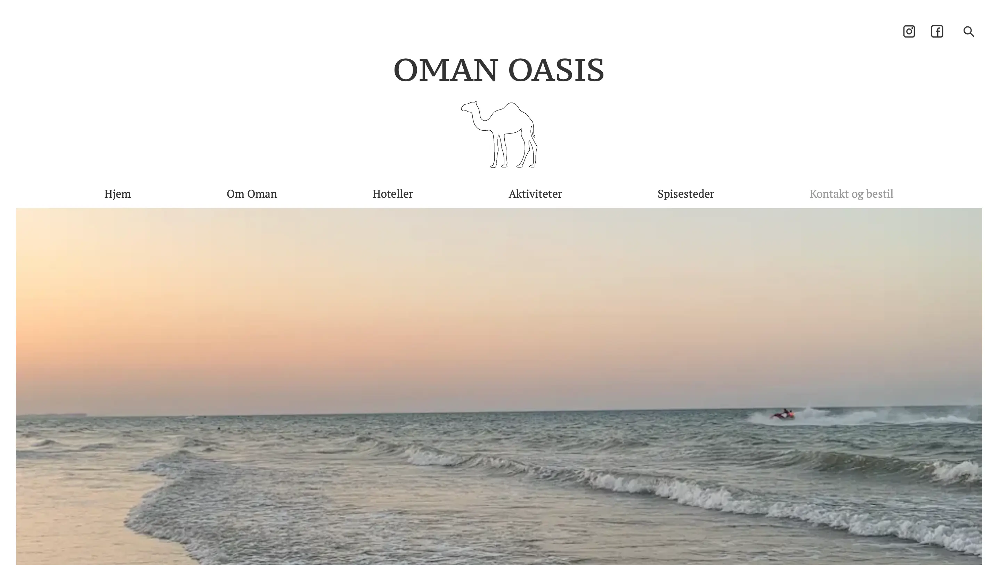

OMAN OASIS - WEBSITE
TEMA 3 - UX/UI
I tredje tema blev vi introduceret for grundlæggende UX/UI. Dette gav os en grundlæggende forståelse for samspillet mellem brugeren og brugergrænseflader, samt hvilke værktøjer og teorier der benyttes til test, research, design og test af design i digital produktudvikling.
Vi fik til opgave at designe og lave vores egen hjemmeside om et valgfrit emne og med et formål for sitet. Vi skulle lave research og idé, en digital prototype, en processdokumentation og selv kode sitet.
Min rolle
- Programmør
- Designer
- Konceptudvikler
Hvad har jeg lært?
- Research metoder
- Sketch
SKETCH FASEN
Efter jeg havde fået min idé om at lave et rejsebureau til Oman, kunne jeg begynde på min skitsefase. Her benyttede jeg mig af the four-step sketch, crazy 8 og solution sketch til at konkretisere mine ideer og gøre dem til reelle koncepter.
RESEARCH
I min research benyttede jeg observationsresearch og interview for at få vigtig indsigt, der kunne hjælpe mig med at få et godt formål og bedre udseende, så jeg kunne optimere mit rejsebureau site. Observationsresearchen brugte jeg til at observere, hvordan min observeringspersons adfærd var med rejsebureau/rejseguides. Hvornår hun blev fanget af noget, og hvornår hun ikke gjorde. Interviewet brugte jeg for at opnå kvalitativ indsigt om en brugers oplevelse af mit sites formål og sikre deres behov, brug og mangler. Al min research fik jeg samlet, så jeg kunne gøre brug af det, der fungerede, og undlade det, som ikke gjorde.
FÆRDIGE RESULTAT
Min endelige hjemmeside blev til et rejsebureau, med navnet 'Oman Oasis', der skal gøre det mere overskueligt at rejse til Oman. Alt er samlet ét sted, hvor man bliver holdt i hånden fra start til slut. Hjemmesiden er som en skattekiste, der skal gøre ens drømme til virkelighed. Man får oplysninger, i små glimt, som viser hvad Oman Oasis tilbyder, og som tænder et ønske hos brugeren om at få mere at vide.
Målgruppen er alle rejsende, der ønsker en luksusferie, som er autentisk og som ikke går på kompromis med kvaliteten.
Hjemmesiden giver en oplevelse af et autentisk Oman. Den er æstetisk, enkel, har korte tekster og drømmende billeder, der udtrykker en stemning. Der er links til Instagram og Facebook, som kan kommunikere brandet ud mod en potentiel kunde. Farverne på hjemmesiden og det æstetiske design giver en fornemmelse af luksus og velbehag. Dette fandt jeg ud af i min research, har stor betydning da billederne har meget at skulle have sagt. Det er billederne og det æstetiske udtryk der som det første fanger en brugers opmærksomhed. Mit ønske til hjemmesidens udtryk fik jeg bekræftet i min brugertest.
Til sitet → 
